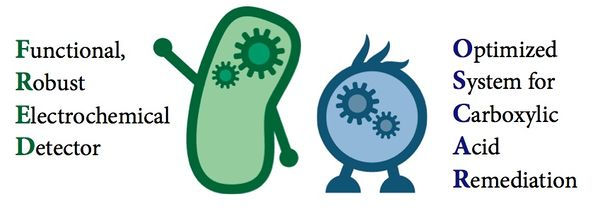

FAQ
How to “lead” the E.Coli fight with heat?
 There is a protein family called HSP. They can help cells to fix the damage caused by heat by restoring the protein back to normal condition. In our design, HSP are controlled by a kind of RNA switch. The special mRNA have a stem-circle structure, which can prevent the code in the mRNA from being translated. Once the temperature reaches the level we set, the stem-circle will transform to normal condition, which means that the switch will open automatically. As a result, Ecoli can keep their producing ability, ignoring the relatively hot environment. That is the weapon we give to E.coli to fight with heat. This device is our forth device.
There is a protein family called HSP. They can help cells to fix the damage caused by heat by restoring the protein back to normal condition. In our design, HSP are controlled by a kind of RNA switch. The special mRNA have a stem-circle structure, which can prevent the code in the mRNA from being translated. Once the temperature reaches the level we set, the stem-circle will transform to normal condition, which means that the switch will open automatically. As a result, Ecoli can keep their producing ability, ignoring the relatively hot environment. That is the weapon we give to E.coli to fight with heat. This device is our forth device.
How can the E.coli sacrifice themselves?
Maybe many people think bacteria are selfish creatures, but that is not totally true. MazEF, is a widely used system among wide bacteria. With this system, many bacteria will sacrifice themselves, and leave nutrition to the left ones when facing threats from dangerous environment, such as heat, lack of food and so on. MazF , which has RNA cleavage activity, is a kind of toxin. MazE, on the other hand, is the antidote of MazF. When MazE can combine with MazF, the cell will not be harmed. But once we inhibit the production of MazE, the cell step into programmed cell death(PCD). In our design, we add our MazEF into E.coli, so once the pathway was open, E.coli will be ready for sacrifice. That is our third device.

Figure 2: Introducing our dynamic duo FRED and OSCAR! This biosensor/bioreactor team is ready to detect and remediate toxins in the environment. Not only can OSCAR break down toxic carboxylic acid containing compounds such as naphthenic acids, but we also demonstrated that he can turn them into functional hydrocarbons!
How can you ensure the “sacrifice” will not become group suicide? In other words, how can you control the number of E.coli who sacrifice?
Actually our inhibition on the production of MazE will not last long. We set a oscillating pathway to control the inhibition to ensure the MazE is much enough to keep most E.coli in a normal condition. The inhibition will be intermittent, not continuous. That is our second device. The simple description is A inhibit B, B inhibit C, and C inhibit A, they become a cycle.
How can E.Coli know it is time to sacrifice?In other words, what contribute to the open of whole pathway?
The whole pathway begin from AHL, which is linear connected to the cell density. The AHL will combine with a protein called LuxR, and form a complex. When the complex reaches a level, it will activate the intermittent pathway, which is the second device. This AHL part is our first device, the beginning of our whole pathway.